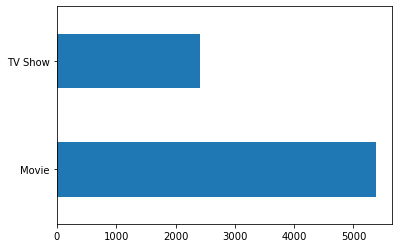

Weekly Assignment #4
Introduction
The entertainment industry has an influence on our culture and society. On Netflix there is a mix of both movies and TV shows that have their own impact on the world. Although both forms of media are on Netflix there are multiple aspects to consider when considering their impact. From the amount of content, to time durations, to the number of views, there are differences between the two that contribute to how and to what extent they shape the lives we live.
Amount of Content
Though there are more movies, TV shows should be taken into consideration. Based on the following data set it is clear that the number of movies on Netflix is more than the TV shows.

The link to the data set can be found here. This is significant because each movie can be their own story with their own lessons (unless it's a sequel). But, this data set is not considering the number of seasons and the duration of each episode per TV show. Though in TV shows the characters remain the same, the events change making each episode of value. If we take that into account, it is evident that there may actually be more TV content on Netflix.Time Duration
Although the duration of a single movie is longer than the length of a single episode, TV still has a strong impact due to the number of seasons and episodes. Based on the Netflix data set the show with the maximum number of seasons for a show is 16. This summary statistic is important because it represents the lifespan of a TV show beyond just one episode. The time combined in all 16 seasons goes beyond one movie. This may be a measure on impact on society.
Views
Though duration of content on Netflix is important to consider when looking at impact of content, the number of views is important. In TV shows the audience may be the same from season to season. It is possible that there is fluctuation in the number of views because some may watch only certain episodes and not the entire series. Whereas in movies, the reach of people may be more diverse and attract more viewers because there is less commitment. Though the data set used above does not contain the information needed the following links provide useful insights.
Popular Netflix Shows and Movies.
Netflix Released Viewing Statistics
Conclusion
Although the entertainment industry has influence on society, TV shows and movies influence us in different ways. They vary on the amount of content, time duration, and quite possible the number of viewers. These are just two aspects of media which have an impact, but there is so much other content that people consume that we can look at as well.